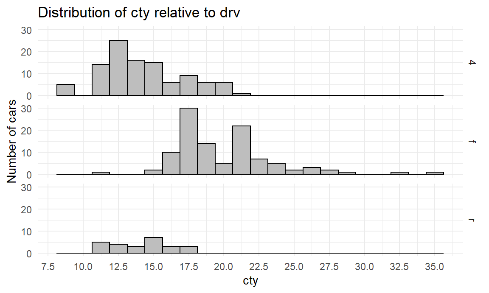
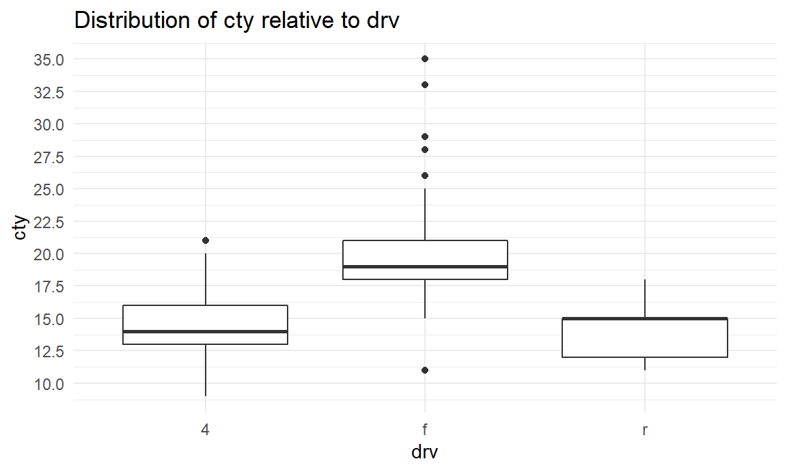
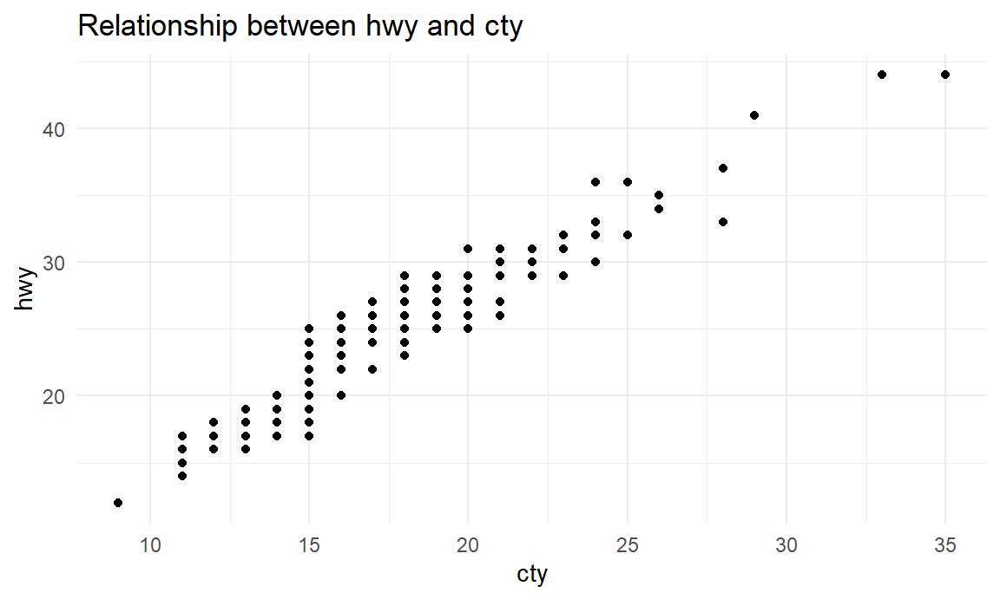
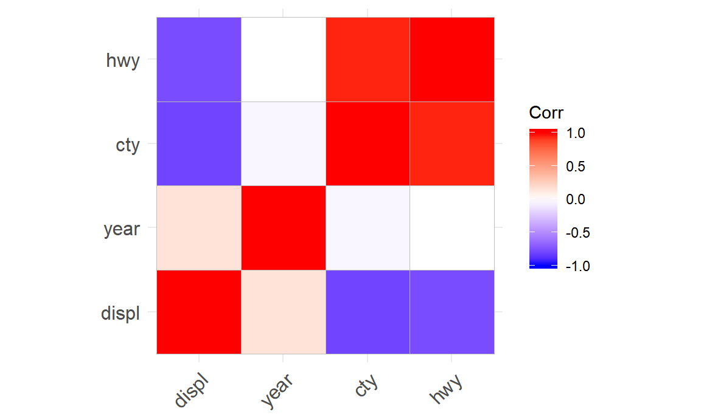
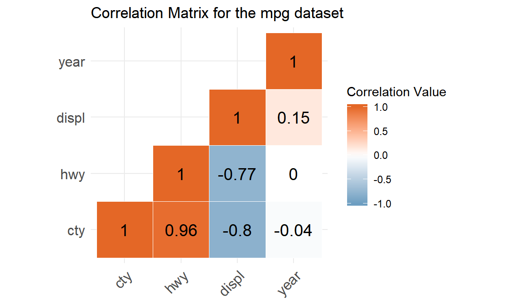
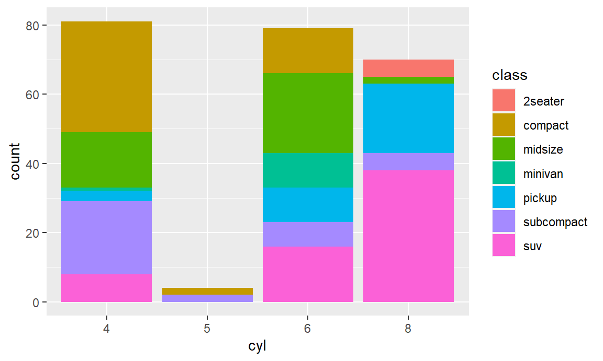
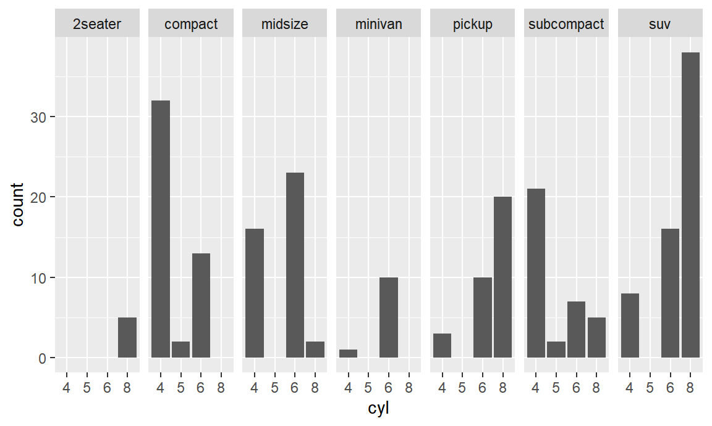
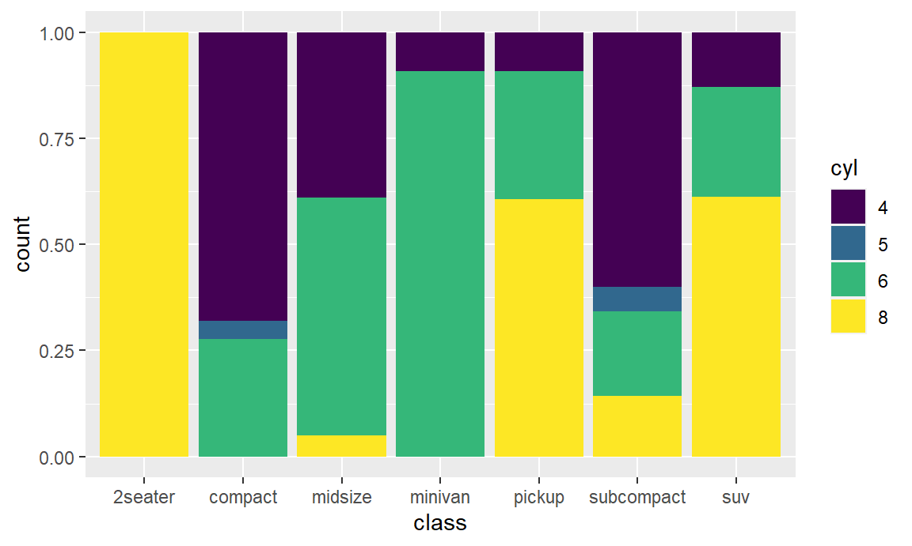
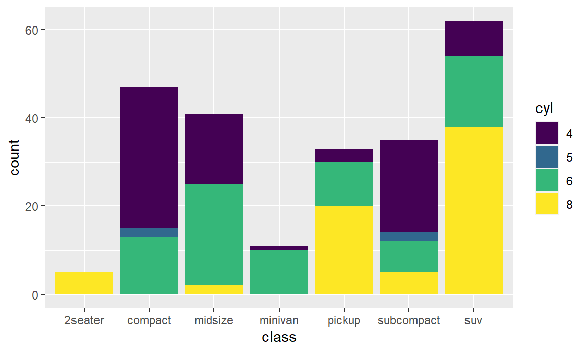

Chapter 5 Tutorial - Descriptieve statistieken
5.1 Before you start
Before you start this tutorial, make sure to have installed the packages dplyr, tidyr, ggcorrplot, and ggplot2, if you haven’t already done so. You can load these using the library function. If you need to install some of them, use install.packages first.
Additionally, you might also want to use the following packages. They will appear useful at some point in this tutorial, but are not strictly necessary.
This tutorial will use the mpg data set, containing information on 234 different cars. The mpg.RDS file is distributed with this tutorial.
The data set contains the following variables:12
| Variable | Description |
|---|---|
| manufacturer | The manufacturer |
| model | The model name |
| displ | Engine displacement, in liters |
| year | Year of manufacture |
| cyl | Number of cylinders |
| trans | Type of transmission (koppeling) |
| drv | f = front-wheel drive, r = rear wheel drive, 4 = 4wd |
| cty | City miles per gallon of fuel |
| hwy | Highway miles per gallon of fuel |
| fl | Fuel type (c,d,e,p,r) |
| class | Type of car (2seater, compact, midsize, minivan, pickup, subcompact, suv) |
5.2 Introduction
The aim of this tutorial is to perform both univariate and bivariate analysis with the dplyr package. Furthermore, the tidyr and ggcorrplot packages will be used in a limited number of cases for extra support.
The univariate analysis will be done for both categorical and continuous variables. The bivariate analysis will be done for each of the following pairs: continuous-categorical, continuous-continuous and categorical-categorical. Next to a numerical analysis using functions from the aforementioned packages, the analyses will be accompanied by appropriate graphs made with ggplot2. A basic understanding of ggplot2 is required.
The tutorial is structured as follows:
- Some general dplyr functions which are helpful
- Univariate analysis of a continuous variable
- Bivariate analysis of a continuous variable with respect to a categorical variable
- Univariate analysis of a categorical variable
- Bivariate analysis of a continuous variable with respect to another continuous variable
- Bivariate analysis of a categorical variable with respect to another categorical variable
5.3 Helpful dplyr functions
Before turning to analyzing our data set, there are a few helpful auxiliary functions contained in dplyr which we can use to handle and analyze or data. The first one is tbl_df, pronounced as tibble data.frame.
5.3.1 Tibbles
Given a data.frame df, tbl_df(df) will turn it into a tibble. A tibble is a special kind of data.frame used by dplyr and other packages of the tidyverse.13 When a data.frame is turned into a tibble its class will change.
## [1] "data.frame"## [1] "tbl_df" "tbl" "data.frame"You can see that the mpg object now has three different class labels. It is still a data.frame, but a special kind of data.frame, i.e. a tibble data.frame.
The difference between an ordinary data.frame and a tibble data.frame is most noticeable when printing (large) data.frames. Just try to print the data set with the following two lines in the console.
Do you notice the difference? When printing an ordinary data.frame, an abundance of observations will be printed in the console. As a result you’ll have to scroll back up to see the variable names. Even worse, when the columns don’t fit on a single page, each observation will be scattered among different lines, making the output quite unreadable.14
However, when printing a tibble data.frame, only the first 10 rows will be printed by default, and variables that don’t fit within the width of the page or console will be hidden. This makes the printed data set much more readable and our console less messed up.
The downside of this approach is that, sometimes, you want to see more observations or more variables, without turning your tibble back into a data.frame. You can solve this by explicitly using the print function and setting the arguments n and width. The following line will print all rows and columns, by setting both arguments to Inf, which stands for infinity.15 You can also use other values to print varying numbers of columns and rows. Later we will see how we can print specific rows and columns.
Except for printing, tibbles allow for some easier manipulations compared the a normal data.frame when you install the package tibble. However, this falls outside of the scope of this tutorial. Furthermore, you will see that the output of dplyr functions discussed in the remainder of this tutorial are automatically tibbles. This means that often you do not explicitly need to use tbl_df. So, for now, it suffices to understand the difference.
5.3.2 Glimpse
A second useful function is the glimpse function. This function is the dplyr-alternative to the well-known str function for base R, and is thus helpful for a first inspection of the data set at hand. It will give a slightly different output compared to str, and is by some perceived as more neat.
## Classes 'tbl_df', 'tbl' and 'data.frame': 234 obs. of 11 variables:
## $ manufacturer: Factor w/ 15 levels "audi","chevrolet",..: 1 1 1 1 1 1 1 1 1 1 ...
## $ model : Factor w/ 38 levels "4runner 4wd",..: 2 2 2 2 2 2 2 3 3 3 ...
## $ displ : num 1.8 1.8 2 2 2.8 2.8 3.1 1.8 1.8 2 ...
## $ year : int 1999 1999 2008 2008 1999 1999 2008 1999 1999 2008 ...
## $ cyl : Ord.factor w/ 4 levels "4"<"5"<"6"<"8": 1 1 1 1 3 3 3 1 1 1 ...
## $ trans : Factor w/ 10 levels "auto(av)","auto(l3)",..: 4 9 10 1 4 9 1 9 4 10 ...
## $ drv : Factor w/ 3 levels "4","f","r": 2 2 2 2 2 2 2 1 1 1 ...
## $ cty : int 18 21 20 21 16 18 18 18 16 20 ...
## $ hwy : int 29 29 31 30 26 26 27 26 25 28 ...
## $ fl : Factor w/ 5 levels "c","d","e","p",..: 4 4 4 4 4 4 4 4 4 4 ...
## $ class : Factor w/ 7 levels "2seater","compact",..: 2 2 2 2 2 2 2 2 2 2 ...## Observations: 234
## Variables: 11
## $ manufacturer <fct> audi, audi, audi, audi, audi, audi, audi, audi, audi, ...
## $ model <fct> a4, a4, a4, a4, a4, a4, a4, a4 quattro, a4 quattro, a4...
## $ displ <dbl> 1.8, 1.8, 2.0, 2.0, 2.8, 2.8, 3.1, 1.8, 1.8, 2.0, 2.0,...
## $ year <int> 1999, 1999, 2008, 2008, 1999, 1999, 2008, 1999, 1999, ...
## $ cyl <ord> 4, 4, 4, 4, 6, 6, 6, 4, 4, 4, 4, 6, 6, 6, 6, 6, 6, 8, ...
## $ trans <fct> auto(l5), manual(m5), manual(m6), auto(av), auto(l5), ...
## $ drv <fct> f, f, f, f, f, f, f, 4, 4, 4, 4, 4, 4, 4, 4, 4, 4, 4, ...
## $ cty <int> 18, 21, 20, 21, 16, 18, 18, 18, 16, 20, 19, 15, 17, 17...
## $ hwy <int> 29, 29, 31, 30, 26, 26, 27, 26, 25, 28, 27, 25, 25, 25...
## $ fl <fct> p, p, p, p, p, p, p, p, p, p, p, p, p, p, p, p, p, p, ...
## $ class <fct> compact, compact, compact, compact, compact, compact, ...5.3.3 %>%
Another helpful function is a very special one, and is called the piping symbol.16 The piping symbol consist of a greater-than sign, preceded and followed by a %-sign The piping symbol can be used to pipe different statements together. You can compare it with pipes in a waterworks system. Within a water purification station, pipes will transport the water from one treatment station to the next and eventually to the households. Here, we use the piping symbol to bring our data from one manipulation to the next. Consider this very simple example.
We can paraphrase this line as: “Take the head (i.e. the first 6 rows) of the data set mpg.”
When we use the piping symbol, the first argument of a function can be placed before the function call instead of inside it. The last line of code is therefore equivalent to the following line.17
We can now say: “We take the data set mpg and then take the head of it.” This sentence seems more natural, as it is very easy to extend it with the further steps you are going to take.
As pipes bring water from one place to the next in a waterworks system, the piping symbol brings our data from one place to the next, in this case the head function. At this point, it might seem ridiculous to do this, but as we will see very soon, this symbol comes in very handy.
As another example, the next two hypothetical statements are equivalent
And when we have two functions, say f and g which we called in a nested way, i.e. one within the other, we can do the following.
f(g(x,y),z)
# Bring the first argument of f to the front
g(x,y) %>% f(z)
# Bring the first argument of g to the front
x %>% g(y) %>% f(z)Thus, this command takes x, performs function g with argument y and then the result is given to function f with second argument z. This is much more easy to read than the original line, were we performed function f on the result of function g on x and y, and using z as second argument to f.
However, that’s enough of abstract concepts. It’s time to do something with our data and put this symbol to good use.
5.4 Univariate analysis of a continuous variable
We start with a uniform analysis of continuous variables. Examples of continuous variables are age, distance, speed, weight, etc. For these kind of variables we can measure the centrality and the spread. Measures of centrality are mean, median. Measures of spread are standard deviation, quantiles, min and max, range, interquartile range.
All these measures have one thing in common: they summarise a continuous variable by way of one number, one value. This can be performed using the summarise function of dplyr.18
As an example, suppose we want to compute the mean and the standard deviation of the cty.
## # A tibble: 1 x 2
## mean_cty st_dev_cty
## <dbl> <dbl>
## 1 16.9 4.26The first argument of summarize is the data argument. All the following arguments will become new columns is the resulting tables. mean_cty and st_dev_cty are the names of the new columns. These names can be whatever that you want them to be.19 The parts after the =-sign will become the contents of the columns, i.e. the mean (computed by the mean function) and the standard deviation (computed by the sd function).
We can rewrite the line above by using the %>% symbol. Notice that after this symbol, we used enter, so that summarize begins on a new line, with an indentation. The indentation points to the fact that these lines actually form one statement (i.e. one line cannot be executed without the other).20
| mean_cty | st_dev_cty |
|---|---|
| 16.86 | 4.256 |
All functions used within the summarize function should return one and only one value, i.e. the mean, the median, the interquartile range, etc. We call these functions summary functions. An (incomplete) list of summary functions is included here:
minmaxmeanmedianfirst(first element of vector)last(last element of vector)n(number of values)21nth(n-th value of a vector)n_distinct(number of distinct values in a vector)IQR(interquartile range)var(variance)sd(standard deviation)quantilesum
Note that (except n) all these functions can also be used on normal vectors, i.e. not inside the summarize function. The other way round, these are not the only functions that can be used within summarize. In general, all function that return a single value can be used. Moreover, we can also include columns of which we set the value manually. For instance, we can update the last example and include that we used the cty variable as a character column. In this case, we don’t need a summary function, but only a value, e.g. “cty”.
| variable | mean_cty | st_dev_cty |
|---|---|---|
| cty | 16.86 | 4.256 |
Some summary functions need additional arguments, such as the nth function which need a value for n, and possibly specify an ordering. The quantile function needs a probs argument, which stands for probability. For instance, to calculate the first 10% percentile, we set probs = 0.1.
mpg %>%
summarize(variable = "cty",
q0.2 = quantile(cty, 0.2),
q0.4 = quantile(cty, 0.4),
q0.6 = quantile(cty, 0.6),
q0.8 = quantile(cty, 0.8)) %>%
pander| variable | q0.2 | q0.4 | q0.6 | q0.8 |
|---|---|---|---|---|
| cty | 13 | 15 | 18 | 20 |
We can see that 20% of the cty values is less than or equal to 13, and 20% of the cty values is greater than or equal to 20. In the last block of code, we have put each variable on a new line. Rstudio will automatically indent all lines, such that it is clear that they are arguments of the summarize function. The pander function came again on a new line, using the same indentation as summarize.
If we want to support our results with graphical output, we can plot a box plot or histogram using ggplot2. For an introduction to ggplot2, we refer to our ggplot2 tutorial. Below, we have plotted a histogram. We have also added a vertical line to indicate the mean of cty, using geom_vline.
mpg %>%
ggplot(aes(cty)) +
geom_histogram(binwidth = 1.25, color = "black",fill = "grey") +
geom_vline(xintercept = mean(mpg$cty), lwd = 2) +
labs(title = "Distribution of cty",
x = "cty",
y = "Number of cars") +
theme_minimal() +
scale_x_continuous(breaks = seq(7.5,35,2.5))With the summarize function we can perform a univariate analysis of the spread and centrality of any continuous variable. Great! Now, it is time to go one step further and start with bivariate analysis of continuous variables in combination with categorical variables.
5.5 Bivariate analysis of a continuous variable with respect to a categorical variable
Before we start our calculations, let’s continue in a graphical way. Before, we have analyzed the distribution of cty, as shown with the histogram above. Now we want to analyse it for different types of drivings (e.g. 4-wheel drive, front wheel drive or rear wheel drive), as recorded by the variable drv. Graphically, we can plot different histograms for each of these three categories using facets.
mpg %>%
ggplot(aes(cty)) +
geom_histogram(binwidth = 1.25, color = "black",fill = "grey") +
labs(title = "Distribution of cty relative to drv",
x = "cty",
y = "Number of cars") +
theme_minimal() +
scale_x_continuous(breaks = seq(7.5,35,2.5)) +
facet_grid(drv~.)
Clearly, there are some differences among these categories. Let’s try to put these into numbers. What we effectively want to do is calculate the centrality and spread for each of these categories, i.e. for each group of cars. We therefore introduce a new dplyr-function called group_by. The first argument of this function is needed for the data, all other arguments (which should normally be categorical) will be used the group the data.
## # A tibble: 234 x 11
## # Groups: drv [3]
## manufacturer model displ year cyl trans drv cty hwy fl class
## <fct> <fct> <dbl> <int> <ord> <fct> <fct> <int> <int> <fct> <fct>
## 1 audi a4 1.8 1999 4 auto(l~ f 18 29 p comp~
## 2 audi a4 1.8 1999 4 manual~ f 21 29 p comp~
## 3 audi a4 2 2008 4 manual~ f 20 31 p comp~
## 4 audi a4 2 2008 4 auto(a~ f 21 30 p comp~
## 5 audi a4 2.8 1999 6 auto(l~ f 16 26 p comp~
## 6 audi a4 2.8 1999 6 manual~ f 18 26 p comp~
## 7 audi a4 3.1 2008 6 auto(a~ f 18 27 p comp~
## 8 audi a4 quat~ 1.8 1999 4 manual~ 4 18 26 p comp~
## 9 audi a4 quat~ 1.8 1999 4 auto(l~ 4 16 25 p comp~
## 10 audi a4 quat~ 2 2008 4 manual~ 4 20 28 p comp~
## # ... with 224 more rowsThe output of this line just returns us a tibble, with no remarkable modifications. But don’t be fooled, because there are! On the second line printed we read “Groups: drv [3]”. Thus, this tibble is grouped on the variable drv, and there are three different groups. Just for the sake of example, let us also add trans as a group.
## # A tibble: 234 x 11
## # Groups: drv, trans [24]
## manufacturer model displ year cyl trans drv cty hwy fl class
## <fct> <fct> <dbl> <int> <ord> <fct> <fct> <int> <int> <fct> <fct>
## 1 audi a4 1.8 1999 4 auto(l~ f 18 29 p comp~
## 2 audi a4 1.8 1999 4 manual~ f 21 29 p comp~
## 3 audi a4 2 2008 4 manual~ f 20 31 p comp~
## 4 audi a4 2 2008 4 auto(a~ f 21 30 p comp~
## 5 audi a4 2.8 1999 6 auto(l~ f 16 26 p comp~
## 6 audi a4 2.8 1999 6 manual~ f 18 26 p comp~
## 7 audi a4 3.1 2008 6 auto(a~ f 18 27 p comp~
## 8 audi a4 quat~ 1.8 1999 4 manual~ 4 18 26 p comp~
## 9 audi a4 quat~ 1.8 1999 4 auto(l~ 4 16 25 p comp~
## 10 audi a4 quat~ 2 2008 4 manual~ 4 20 28 p comp~
## # ... with 224 more rowsWe can just put trans after drv in the group_by function. Now, we can see that the tibble is grouped on these two variables, and there are 24 different groups22. We can also check the grouping of data.frame by using the groups function. This saves us from printing the entire data to check the grouping. Note that below, we again use the piping symbol effectively.
## [[1]]
## drv
##
## [[2]]
## transOk, but wait a minute. If nothing else changes, why are we doing this? Once a data.frame is grouped, the next operations will be performed for each group separately. Isn’t that just what we needed? Indeed. For each drv group, we wanted to compute the centrality and spread. Let’s give it a try.
| drv | mean_cty | sd_cty |
|---|---|---|
| 4 | 14.33 | 2.874 |
| f | 19.97 | 3.627 |
| r | 14.08 | 2.216 |
Great! Calling summarize will no longer give us 1 row of values. Instead, it will return 1 row for each group. We can see that the mean cty is much larger for cars with a front wheel drive than for other cars, as was already suspected based on the histogram. Another way of visualizing this, without using facets, is to use box plots.
mpg %>%
ggplot(aes(drv,cty)) +
geom_boxplot() +
labs(title = "Distribution of cty relative to drv",
x = "drv",
y = "cty") +
theme_minimal() +
scale_y_continuous(breaks = seq(7.5,35,2.5)) 
We can now analyse the centrality and spread of a continuous variable, both univariately and bivariately with respect to a categorical variable. To do this, we have learned to use two new functions: summarize and group_by. Summarizing an ungrouped data.frame will return a data.frame with 1 row. Summarizing a grouped data.frame will return a data.frame where the number of rows is equal to the number of groups.
The next thing on our list is the univariate analysis of a categorical variable. For this, we will compute frequency tables and learn yet some additional new exciting functions: mutate, arrange and slice. Let’s get on with it!
5.6 Univariate analysis of a categorical variable
In our data, there are 15 manufacturers. Assume we want to know more about these, i.e. which manufacturer has a lot of cars in our data, and which one has less. Graphically, we can already do this using a bar chart.23
mpg %>%
ggplot() +
geom_bar(aes(fct_infreq(manufacturer)), color = "black",fill = "grey") +
coord_flip() +
labs(title = "Number of cars per manufacturer",
x = "Manufacturer",
y = "Number of cars") +
scale_y_continuous(breaks = seq(0,40,5)) +
theme_minimal() 
Now, we want to analyze this numerically. The most obvious way to do this is with a frequency table. Below, we see the end product of this analysis. Subsequently, we will start constructing it step by step.
| nr | manufacturer | frequency | relative_freqency | cumulative_relative_frequency |
|---|---|---|---|---|
| 1 | dodge | 37 | 15.81 | 15.81 |
| 2 | toyota | 34 | 14.53 | 30.34 |
| 3 | volkswagen | 27 | 11.54 | 41.88 |
| 4 | ford | 25 | 10.68 | 52.56 |
| 5 | chevrolet | 19 | 8.12 | 60.68 |
| 6 | audi | 18 | 7.69 | 68.38 |
| 7 | hyundai | 14 | 5.98 | 74.36 |
| 8 | subaru | 14 | 5.98 | 80.34 |
| 9 | nissan | 13 | 5.56 | 85.9 |
| 10 | honda | 9 | 3.85 | 89.74 |
| 11 | jeep | 8 | 3.42 | 93.16 |
| 12 | pontiac | 5 | 2.14 | 95.3 |
| 13 | land rover | 4 | 1.71 | 97.01 |
| 14 | mercury | 4 | 1.71 | 98.72 |
| 15 | lincoln | 3 | 1.28 | 100 |
Let’s start. The first thing to do is to count the number of observations for each value of the categorical variable. Thus, how many cars are there for each manufacturer? We can do this by grouping the data on manufacturer and then counting the number of rows using n.
| manufacturer | frequency |
|---|---|
| audi | 18 |
| chevrolet | 19 |
| dodge | 37 |
| ford | 25 |
| honda | 9 |
| hyundai | 14 |
| jeep | 8 |
| land rover | 4 |
| lincoln | 3 |
| mercury | 4 |
| nissan | 13 |
| pontiac | 5 |
| subaru | 14 |
| toyota | 34 |
| volkswagen | 27 |
The function n() does not require any argument. It will just calculate the number of rows there are in a data.frame, or, as in this case, in each group. The next step is to order these manufacturers according to the number of cars. In order to arrange rows, we use the function arrange from dplyr. Since we want to arrange the manufacturers by decreasing frequency, we use the function desc (descending). In particular, the following will do the trick:
mpg %>%
group_by(manufacturer) %>%
summarize(frequency = n()) %>%
arrange(desc(frequency)) %>%
pander| manufacturer | frequency |
|---|---|
| dodge | 37 |
| toyota | 34 |
| volkswagen | 27 |
| ford | 25 |
| chevrolet | 19 |
| audi | 18 |
| hyundai | 14 |
| subaru | 14 |
| nissan | 13 |
| honda | 9 |
| jeep | 8 |
| pontiac | 5 |
| land rover | 4 |
| mercury | 4 |
| lincoln | 3 |
The first argument of arrange is again the data, which is given to it using the piping symbol. The other arguments will then be used to order the data. Note that more than one variable can be specified. The data will then by arranged firstly using the first variable. Subsequently, the next variables will be used to break ties. When desc is placed around a variable name, this variable will be arranged decreasingly. Just try out some different orderings yourself!
Now, we need to add a new column for the relative frequencies. To do this we use the function mutate from dplyr, which literally means to change. The mutate function call is similar to that of summarize: the first argument is the data, the others are of the form variable_name = value. The variable name is the name that will appear as name of the new column. The value is the value for the new column. This can either be function which returns a vector with a length equal to that of the data.frame, or it can be a simple computation using other variables in the data.frame. The following statement will compute the relative frequencies, by dividing each frequency, with the sum of all frequencies.
mpg %>%
group_by(manufacturer) %>%
summarize(frequency = n()) %>%
arrange(desc(frequency)) %>%
mutate(relative_frequency = frequency/sum(frequency)) %>%
pander| manufacturer | frequency | relative_frequency |
|---|---|---|
| dodge | 37 | 0.1581 |
| toyota | 34 | 0.1453 |
| volkswagen | 27 | 0.1154 |
| ford | 25 | 0.1068 |
| chevrolet | 19 | 0.0812 |
| audi | 18 | 0.07692 |
| hyundai | 14 | 0.05983 |
| subaru | 14 | 0.05983 |
| nissan | 13 | 0.05556 |
| honda | 9 | 0.03846 |
| jeep | 8 | 0.03419 |
| pontiac | 5 | 0.02137 |
| land rover | 4 | 0.01709 |
| mercury | 4 | 0.01709 |
| lincoln | 3 | 0.01282 |
Here, sum(frequency) refers to the sum of the frequency column, while frequency refers to the specific values in each row. Next, we will add the cumulative relative frequency. We can add this to the same mutate call.
mpg %>%
group_by(manufacturer) %>%
summarize(frequency = n()) %>%
arrange(desc(frequency)) %>%
mutate(relative_frequency = frequency/sum(frequency),
relative_cumulative_frequency = cumsum(relative_frequency)) %>%
pander| manufacturer | frequency | relative_frequency | relative_cumulative_frequency |
|---|---|---|---|
| dodge | 37 | 0.1581 | 0.1581 |
| toyota | 34 | 0.1453 | 0.3034 |
| volkswagen | 27 | 0.1154 | 0.4188 |
| ford | 25 | 0.1068 | 0.5256 |
| chevrolet | 19 | 0.0812 | 0.6068 |
| audi | 18 | 0.07692 | 0.6838 |
| hyundai | 14 | 0.05983 | 0.7436 |
| subaru | 14 | 0.05983 | 0.8034 |
| nissan | 13 | 0.05556 | 0.859 |
| honda | 9 | 0.03846 | 0.8974 |
| jeep | 8 | 0.03419 | 0.9316 |
| pontiac | 5 | 0.02137 | 0.953 |
| land rover | 4 | 0.01709 | 0.9701 |
| mercury | 4 | 0.01709 | 0.9872 |
| lincoln | 3 | 0.01282 | 1 |
While the computation of relative frequency was a simple formula, the cumulative frequency is computed using the cumsum. This is what is called a window function. While summary functions always return one value, window functions return the same number of values as the vector used as input. Thus, our 15 relative frequencies will result in 15 cumulative frequencies. Other window functions are list below.
Cumulative functions
- cumsum: The cumulative sum of a vector
- cummax: The cumulative maximum of a vector
- cummin: The cumulative minimum of a vector
- cumprod: The cumulative product of a vector
- cummean: A cumulative, or rolling, mean
- cumany: For logical values, a cumulative “or”
- cumall: For logical values, a cumulative “and”
- cume_dist: Cumulative distribution
Element-wise function of more than one variable
- pmax: Element/pair-wise maximum of a vector
- pmin: Element/pair-wise minimum of a vector
Ranking function
- percent_rank: ranks rescaled to [0,1]
- row_number: Rank which breaks ties by taking elements by first occurrence (mostly alphabetically)
- min_rank: Rank which breaks ties by giving them the same rank and omitting the next rank
- dense_rank: Same as min_rank, but without omission
Shifting functions
- lead(n): shift values n places to the front, add n NA’s as last values
- lag(n): shift values n places to the back, add n NA’s as first values
Other
- between(a,b): Lie the values of a vector between a and b? Returns logical
- ntile(x,n): Use variable x to arrange the observations and put them in n equally sized groups.
That’s a long list, and not all of them are important. You will use some of them alot (like cumsum), and others only in rare instances. In case of need, come back to this list.
The pmin function returns the pairwise minimum of x and y, while the pmax function will return the pairwise maximum of x and y. Although the p in these functions points to pair it can be used on more than two vectors.
Percent rank will assign a value with between 0 and 1. The smallest value will get zero and the highest value will be one (when there are no ties). But, when two observations are equal, they get the same value, and there will be a gap between subsequent values. Row number will break ties randomly. As such, the highest value will always be equal to the number of observations. Minimum rank assigns the minimum rank equally among ties, and also includes gaps, like percent rank. Finally, dense rank will also assign ties the same rank, but will not allow gaps in the ranking.
data.frame(x = sample(1:10)) %>%
mutate(lead = lead(x),
lag = lag(x,2),
between(x,4,8),
ntile(x,5)) %>%
pander| x | lead | lag | between(x, 4, 8) | ntile(x, 5) |
|---|---|---|---|---|
| 1 | 8 | NA | FALSE | 1 |
| 8 | 2 | NA | TRUE | 4 |
| 2 | 9 | 1 | FALSE | 1 |
| 9 | 3 | 8 | FALSE | 5 |
| 3 | 7 | 2 | FALSE | 2 |
| 7 | 4 | 9 | TRUE | 4 |
| 4 | 10 | 3 | TRUE | 2 |
| 10 | 6 | 7 | FALSE | 5 |
| 6 | 5 | 4 | TRUE | 3 |
| 5 | NA | 10 | TRUE | 3 |
An example of the last window functions is show above. The lead and lag functions shift values up and down. By default, they are shifted with one place. The between function tests whether values are between certain bound (including the boundary values). Finally, the ntile function will create a variable that groups observations in equal bins, in this case 5, according to a specific variable. Thus, values 1 and 2 of x are grouped in bin 1, values 3 and 4 in bin 2, etc. Note that, although the ntile function returns numbers, it is actually a categorical variable!
They may not all seen very obvious, but sometimes these window function can come in quite powerful and handy during an analysis. Make sure to remember their existence. But, let’s get back to our frequency table now, as we have gotten a little bit of the beaten track. Below, we show again our last result.
mpg %>%
group_by(manufacturer) %>%
summarize(frequency = n()) %>%
arrange(desc(frequency)) %>%
mutate(relative_frequency = frequency/sum(frequency),
relative_cumulative_frequency = cumsum(relative_frequency)) %>%
pander| manufacturer | frequency | relative_frequency | relative_cumulative_frequency |
|---|---|---|---|
| dodge | 37 | 0.1581 | 0.1581 |
| toyota | 34 | 0.1453 | 0.3034 |
| volkswagen | 27 | 0.1154 | 0.4188 |
| ford | 25 | 0.1068 | 0.5256 |
| chevrolet | 19 | 0.0812 | 0.6068 |
| audi | 18 | 0.07692 | 0.6838 |
| hyundai | 14 | 0.05983 | 0.7436 |
| subaru | 14 | 0.05983 | 0.8034 |
| nissan | 13 | 0.05556 | 0.859 |
| honda | 9 | 0.03846 | 0.8974 |
| jeep | 8 | 0.03419 | 0.9316 |
| pontiac | 5 | 0.02137 | 0.953 |
| land rover | 4 | 0.01709 | 0.9701 |
| mercury | 4 | 0.01709 | 0.9872 |
| lincoln | 3 | 0.01282 | 1 |
We were quite finished, it seems, but we can still improve the table. One way to do so is to turn the relative (cumulative) frequencies into values between 0 and 100, and to round them to 2 decimals. That last thing can be done using the function round and specifying the number of decimals.
mpg %>%
group_by(manufacturer) %>%
summarize(frequency = n()) %>%
arrange(desc(frequency)) %>%
mutate(relative_frequency = frequency/sum(frequency),
relative_cumulative_frequency = cumsum(relative_frequency),
relative_frequency = round(100*relative_frequency,2),
relative_cumulative_frequency = round(100*relative_cumulative_frequency,2)) %>%
pander| manufacturer | frequency | relative_frequency | relative_cumulative_frequency |
|---|---|---|---|
| dodge | 37 | 15.81 | 15.81 |
| toyota | 34 | 14.53 | 30.34 |
| volkswagen | 27 | 11.54 | 41.88 |
| ford | 25 | 10.68 | 52.56 |
| chevrolet | 19 | 8.12 | 60.68 |
| audi | 18 | 7.69 | 68.38 |
| hyundai | 14 | 5.98 | 74.36 |
| subaru | 14 | 5.98 | 80.34 |
| nissan | 13 | 5.56 | 85.9 |
| honda | 9 | 3.85 | 89.74 |
| jeep | 8 | 3.42 | 93.16 |
| pontiac | 5 | 2.14 | 95.3 |
| land rover | 4 | 1.71 | 97.01 |
| mercury | 4 | 1.71 | 98.72 |
| lincoln | 3 | 1.28 | 100 |
What’s important to note here is that we have put 4 different statements in mutate. In these statements, it is possible to use variables created before within the same mutate call: the second statement uses the variable in the first. Also, it is possible to overwrite variables, i.e. statement 3 and 4 overwrite the variables created in statement 1 and 2.
You might wonder why we use 4 statements instead of 2, and why didn’t we round immediately? We could have done that for the cumulative frequency, but not for the relative frequency. Can you figure out why?
Finally, we may want to add a ranking, i.e. a row number, to the frequency table. Here, we use the row_number function introduced above.
Before we used desc to arrange decreasingly in arrange, and now we use the minus sign to allocate the row numbers according to decreasing frequency. Is dplyr really this inconsistent? Fortunately, the answer is no. Using the minus is a little trick to shorten your code, but can only be used for numerical variables. This is, because sorting a numerical variable decreasingly, is the same as sorting its negative mirror increasingly (Convince yourself!). As such, we could also have used the minus sign within arrange, and we could have used desc within row_number. But, never use the minus sign to sort categorical values (they don’t have a negative counter part, typically). It is best practice to be consistent in using - or desc, but as this is a tutorial, we show you different ways to do it.
mpg %>%
group_by(manufacturer) %>%
summarize(frequency = n()) %>%
arrange(desc(frequency)) %>%
mutate(relative_frequency = frequency/sum(frequency),
relative_cumulative_frequency = cumsum(relative_frequency),
relative_frequency = round(100*relative_frequency,2),
relative_cumulative_frequency = round(100*relative_cumulative_frequency,2),
nr = row_number(-frequency)) %>%
pander(split.table = 120)| manufacturer | frequency | relative_frequency | relative_cumulative_frequency | nr |
|---|---|---|---|---|
| dodge | 37 | 15.81 | 15.81 | 1 |
| toyota | 34 | 14.53 | 30.34 | 2 |
| volkswagen | 27 | 11.54 | 41.88 | 3 |
| ford | 25 | 10.68 | 52.56 | 4 |
| chevrolet | 19 | 8.12 | 60.68 | 5 |
| audi | 18 | 7.69 | 68.38 | 6 |
| hyundai | 14 | 5.98 | 74.36 | 7 |
| subaru | 14 | 5.98 | 80.34 | 8 |
| nissan | 13 | 5.56 | 85.9 | 9 |
| honda | 9 | 3.85 | 89.74 | 10 |
| jeep | 8 | 3.42 | 93.16 | 11 |
| pontiac | 5 | 2.14 | 95.3 | 12 |
| land rover | 4 | 1.71 | 97.01 | 13 |
| mercury | 4 | 1.71 | 98.72 | 14 |
| lincoln | 3 | 1.28 | 100 | 15 |
Mutate has added the number at the end of the table.24 That’s what we want in most of the cases, but not in this one. To change the order of the variables, we can use the select function from dplyr. This function can be used to select variables, and will place them in the specified order. Thus, what we can do is the following.
mpg %>%
group_by(manufacturer) %>%
summarize(frequency = n()) %>%
arrange(desc(frequency)) %>%
mutate(relative_frequency = frequency/sum(frequency),
relative_cumulative_frequency = cumsum(relative_frequency),
relative_frequency = round(100*relative_frequency,2),
relative_cumulative_frequency = round(100*relative_cumulative_frequency,2),
nr = row_number(-frequency)) %>%
select(nr, manufacturer, frequency, relative_frequency, relative_cumulative_frequency) %>%
pander(split.table = 120)| nr | manufacturer | frequency | relative_frequency | relative_cumulative_frequency |
|---|---|---|---|---|
| 1 | dodge | 37 | 15.81 | 15.81 |
| 2 | toyota | 34 | 14.53 | 30.34 |
| 3 | volkswagen | 27 | 11.54 | 41.88 |
| 4 | ford | 25 | 10.68 | 52.56 |
| 5 | chevrolet | 19 | 8.12 | 60.68 |
| 6 | audi | 18 | 7.69 | 68.38 |
| 7 | hyundai | 14 | 5.98 | 74.36 |
| 8 | subaru | 14 | 5.98 | 80.34 |
| 9 | nissan | 13 | 5.56 | 85.9 |
| 10 | honda | 9 | 3.85 | 89.74 |
| 11 | jeep | 8 | 3.42 | 93.16 |
| 12 | pontiac | 5 | 2.14 | 95.3 |
| 13 | land rover | 4 | 1.71 | 97.01 |
| 14 | mercury | 4 | 1.71 | 98.72 |
| 15 | lincoln | 3 | 1.28 | 100 |
Using the select statement does the trick. But I am still kind of lazy, and I don’t want to write out all the variables, just to put one in the first position. We had only 5 variables here, but imagine what a waste of time it would be when we had more, like 6 for instance. Can’t we just say, put nr in the front, and then add all the other variables in their original order? Dplyr to the rescue!
Fortunately we can. We can just add the function everything to select. This will add all the columns after nr, without repeating nr for a second time. Great, isn’t it?
mpg %>%
group_by(manufacturer) %>%
summarize(frequency = n()) %>%
arrange(desc(frequency)) %>%
mutate(relative_frequency = frequency/sum(frequency),
relative_cumulative_frequency = cumsum(relative_frequency),
relative_frequency = round(100*relative_frequency,2),
relative_cumulative_frequency = round(100*relative_cumulative_frequency,2),
nr = row_number(-frequency)) %>%
select(nr, everything()) %>%
pander(split.table = 120)| nr | manufacturer | frequency | relative_frequency | relative_cumulative_frequency |
|---|---|---|---|---|
| 1 | dodge | 37 | 15.81 | 15.81 |
| 2 | toyota | 34 | 14.53 | 30.34 |
| 3 | volkswagen | 27 | 11.54 | 41.88 |
| 4 | ford | 25 | 10.68 | 52.56 |
| 5 | chevrolet | 19 | 8.12 | 60.68 |
| 6 | audi | 18 | 7.69 | 68.38 |
| 7 | hyundai | 14 | 5.98 | 74.36 |
| 8 | subaru | 14 | 5.98 | 80.34 |
| 9 | nissan | 13 | 5.56 | 85.9 |
| 10 | honda | 9 | 3.85 | 89.74 |
| 11 | jeep | 8 | 3.42 | 93.16 |
| 12 | pontiac | 5 | 2.14 | 95.3 |
| 13 | land rover | 4 | 1.71 | 97.01 |
| 14 | mercury | 4 | 1.71 | 98.72 |
| 15 | lincoln | 3 | 1.28 | 100 |
Select, arrange, mutate, summarize, group_by. We are really mastering dplyr already. Not so difficult after all, isn’t it? Of course there are still other functions, but these 5 are really some of most important functions for data manipulation. Only filter misses in the dplyr hall of fame, but we leave that one for another time. It is always a good idea to have something to look forward to, don’t you agree?
Before we continue with bivariate analysis, there are two more things we should do. Look at the slice function, and evaluate our piping symbol.
The slice function can be used to slice rows from a data.frame. Suppose we have a very long frequency table, and we are only interested in the top 10 values. We can then slice the first 10 rows of this table as follows.
mpg %>%
group_by(manufacturer) %>%
summarize(frequency = n()) %>%
arrange(desc(frequency)) %>%
mutate(relative_frequency = frequency/sum(frequency),
relative_cumulative_frequency = cumsum(relative_frequency),
relative_frequency = round(100*relative_frequency,2),
relative_cumulative_frequency = round(100*relative_cumulative_frequency,2),
nr = row_number(-frequency)) %>%
select(nr, everything()) %>%
slice(1:10) %>%
pander(split.table = 120)| nr | manufacturer | frequency | relative_frequency | relative_cumulative_frequency |
|---|---|---|---|---|
| 1 | dodge | 37 | 15.81 | 15.81 |
| 2 | toyota | 34 | 14.53 | 30.34 |
| 3 | volkswagen | 27 | 11.54 | 41.88 |
| 4 | ford | 25 | 10.68 | 52.56 |
| 5 | chevrolet | 19 | 8.12 | 60.68 |
| 6 | audi | 18 | 7.69 | 68.38 |
| 7 | hyundai | 14 | 5.98 | 74.36 |
| 8 | subaru | 14 | 5.98 | 80.34 |
| 9 | nissan | 13 | 5.56 | 85.9 |
| 10 | honda | 9 | 3.85 | 89.74 |
That’s slicing. Nothing more, nothing less. We have build up some large block of code, but our piping symbol neatly strings it together, doesn’t it? Imagine for a moment that we didn’t had this symbol. In such a case, we should put each first argument again in the function it is followed by. Thus, mpg should go inside group by. The group_by should go inside summarize, etc. The result would be the following.
pander(
slice(
select(
mutate(
arrange(
summarize(
group_by(mpg,
manufacturer),
frequency = n()),
desc(frequency)),
relative_frequency = frequency/sum(frequency),
relative_cumulative_frequency = cumsum(relative_frequency),
relative_frequency = round(100*relative_frequency,2),
relative_cumulative_frequency = round(100*relative_cumulative_frequency,2),
nr = row_number(-frequency)),
nr,
everything()),
1:10)
)That’s quite a mess, isn’t it? All functions got separated from their arguments, and we cannot really make out what we were doing at all. Surely, the piping symbol does a great job at making our code readable and understandable. Make sure to use it wisely!
Now we continue with the bivariate analysis of two continuous variables.
5.7 Bivariate analysis of a continuous variable with respect to another continuous variable
The relationship between two continuous variables can be easily shown graphically with a scatter plot. Let’s look at cty compared with hwy.
mpg %>%
ggplot(aes(cty, hwy)) +
geom_point() +
theme_minimal() +
labs(title = "Relationship between hwy and cty")There is a very clear relation between these variables, and it appears to be quite linear. Let’s draw a linear line through the scatter plot.
mpg %>%
ggplot(aes(cty, hwy)) +
geom_point() +
theme_minimal() +
labs(title = "Relationship between hwy and cty") +
geom_smooth(method = "lm", se = F)
A linear relationship as this can be very effectively measured with the correlation coefficient. Computing correlations can be done with the base R function cor. However, this function expects a data.frame with only continuous variables, as it will compute all possible correlations between these. Correlations cannot be computed between categorical variables (except for ordinal ones). Thus, first, we select the continuous variables using the select function from dplyr. The variables we are interested in are displ, year, cty and hwy.
| displ | year | cty | hwy | |
|---|---|---|---|---|
| displ | 1 | 0.1478 | -0.7985 | -0.766 |
| year | 0.1478 | 1 | -0.03723 | 0.002158 |
| cty | -0.7985 | -0.03723 | 1 | 0.9559 |
| hwy | -0.766 | 0.002158 | 0.9559 | 1 |
The select call might become large when selecting numeric variables in a large data set. We can rewrite it using the select_if function, which doesn’t expect variable names, but it requires a function to test whether a variable should be included. We can use the is.numeric function to test whether a vector is numeric. Thus,25
| displ | year | cty | hwy | |
|---|---|---|---|---|
| displ | 1 | 0.1478 | -0.7985 | -0.766 |
| year | 0.1478 | 1 | -0.03723 | 0.002158 |
| cty | -0.7985 | -0.03723 | 1 | 0.9559 |
| hwy | -0.766 | 0.002158 | 0.9559 | 1 |
Here we see the very strong correlation between cty and hwy. We also see strong negative correlations between displ on the one hand and cty and hwy on the other hand. Can you try to visualize these as we did for cty and hwy?
We could also visualize the correlations computed by cor using ggplot, but something’s amiss. The data returned by the correlation function isn’t very tidy. There are variable names in the columns as well as in the rows?26 Even worse, it isn’t a data.frame!
## [1] "matrix"Matrix? The movie? No, matrix is another type of object in R that you might not have heard of yet. While a data.frame is a collection of vectors, you can think of a matrix as a two dimensional vector. This means that, like in a vector, all elements in a matrix should have the same type. Like a vector can have names, also the rows and columns of a matrix can have names, like in our example.
But, as we know, ggplot2 can only work with data.frames. We are completely doomed! But, we could possibly turn a matrix into a data.frame… And then we can reshape it such that all variables are on columns… We could try…
But, that seems a lot of work. And we are still lazy. Luckily, most R-users are lazy to some extent, and someone must have done this work someday, and must have been so generous to put it into a package. ggcorrplot is the answer to all our needs. The ggcorrplot package has a single function that is useful for us: ggcorrplot. Note that both the package and its main function has been given the same name. How generous! But be careful: cor had one r, ggcorrplot has two.

What we get is a visual matrix. The color of the squares indicate the direction of the relationship (by default, red is positive and blue is negative), That’s nice. However, there are many different options to make ggcorrplot just as we like it. Lets look at the most important ones:
- method: “square” or “circle”: the shape of the elements in the matrix
- lab: if TRUE, it will show the correlation values on top of the squares (or circles)
- lab_col and lab_size: allow us to modify how the values are printed
- outline_color: the color of the borders of the squares
- type: “full”,“lower” or “upper”: a correlation matrix is symmetric, so we can chose to show only the lower or upper half.
- ggtheme: you can use any one of the default ggplot2 themes: theme_grey, theme_minimal, theme_classic. Specify them without brackets or quotation marks, just as we did with
is.numerica few minutes ago. - title
- legend.title
- colors, a vector of three colors for the low, mid and high values. Default: c(“blue”,“white”,“red”)
- hc.order: if set to TRUE we can order the variables to show which variables are most related
- show.diag: Show the diagonal if TRUE (in case type is equal to “lower” or “upper”)
An example of a slightly modified version of our plot is the following:27
mpg %>%
select_if(is.numeric) %>%
cor %>%
ggcorrplot(type = "lower", ggtheme = theme_minimal, colors = c("#6D9EC1","white","#E46726"),
show.diag = T,
lab = T, lab_size = 5,
title = "Correlation Matrix for the mpg dataset",
legend.title = "Correlation Value",
outline.color = "white",
hc.order = T)
We have already traveled a long and exciting way through the tidyverse! The final thing we want to achieve, is to do a bivariate analysis of two categorical variables. For this, we will learn to construct contingency tables. The end is really near now.
5.8 Bivariate analysis of a categorical variable with respect to another categorical variable
We start again by a looking at a graph. Suppose we want to look at the relationship between class and cyl. We could make faceted bar charts.

Here we see that the distributions of class differs when the number of cylinder changes. For 4 cylinders, most cars are compact, while for 8 cylinders, most cars are suv’s. We could also look at it from another perspective however.

And yet another

And yet another

And yet another
Indeed, there are many ways to look at the relationship between two categorical variables. The many graphs that can be made indicate that there can also be multiple contingency tables. Everything really depends on the question you want to answer. Fortunately, we already know a lot of important functions by now, which we can put to good use. We start by counting how many cars there are for each cyl-class combination. Let’s roll.
| cyl | class | frequency |
|---|---|---|
| 4 | compact | 32 |
| 4 | midsize | 16 |
| 4 | minivan | 1 |
| 4 | pickup | 3 |
| 4 | subcompact | 21 |
| 4 | suv | 8 |
| 5 | compact | 2 |
| 5 | subcompact | 2 |
| 6 | compact | 13 |
| 6 | midsize | 23 |
| 6 | minivan | 10 |
| 6 | pickup | 10 |
| 6 | subcompact | 7 |
| 6 | suv | 16 |
| 8 | 2seater | 5 |
| 8 | midsize | 2 |
| 8 | pickup | 20 |
| 8 | subcompact | 5 |
| 8 | suv | 38 |
Great, that went perfect! To make a contingency table of this, we want to put one of the two variables on the columns. This will create a matrix-like structure. Here, we need a new functions, which is called spread. This function is from the tidyr package, which is used to tidy data. However, the other functions from this packages won’t be discussed here.
The function spread has 2 arguments, key and value (apart from data, of course). The key refers to the variable of which we want to put the values as new columns, in this case class. The value refers to the variable of which we want to place the values in the new columns, in this case, our frequency. No idea what is going to happen? Let’s look at an example.
| cyl | 2seater | compact | midsize | minivan | pickup | subcompact | suv |
|---|---|---|---|---|---|---|---|
| 4 | NA | 32 | 16 | 1 | 3 | 21 | 8 |
| 5 | NA | 2 | NA | NA | NA | 2 | NA |
| 6 | NA | 13 | 23 | 10 | 10 | 7 | 16 |
| 8 | 5 | NA | 2 | NA | 20 | 5 | 38 |
Did you see what has happened? Just compare the last two tables. What happens if you use cyl as key?
Now, why do some of the values in this data.frame show NA, which stands for not available? That’s because not all class-cyl combinations exists, i.e., our list before only showed us 19 existing combinations. There are no cars for the other 9 combinations. However, we don’t like NA’s very much, so let’s change them into zero’s. Fortunately, this is a feature of the spread function. The argument fill will be used to “fill” the empty cells. We just need to set it to zero.28
mpg %>%
group_by(cyl, class) %>%
summarize(frequency = n()) %>%
spread(class, frequency, fill = 0) %>%
pander| cyl | 2seater | compact | midsize | minivan | pickup | subcompact | suv |
|---|---|---|---|---|---|---|---|
| 4 | 0 | 32 | 16 | 1 | 3 | 21 | 8 |
| 5 | 0 | 2 | 0 | 0 | 0 | 2 | 0 |
| 6 | 0 | 13 | 23 | 10 | 10 | 7 | 16 |
| 8 | 5 | 0 | 2 | 0 | 20 | 5 | 38 |
Great. This is what I would call a “Contingency table with absolute frequencies”. It shows us the absolute number of cars for each combination of cyl and class, and it tells us that the combination 8 and SUV is the most prominent in our data. This contingency table goes very well with our first two graphs.
Another question we could ask is: If we look at cars with 4 cylinders, what is the specific distribution of classes? In this case, we would like to have relative frequencies. Let’s try this.
mpg %>%
group_by(cyl, class) %>%
summarize(frequency = n()) %>%
mutate(relative_frequency = frequency/sum(frequency)) %>%
pander| cyl | class | frequency | relative_frequency |
|---|---|---|---|
| 4 | compact | 32 | 0.3951 |
| 4 | midsize | 16 | 0.1975 |
| 4 | minivan | 1 | 0.01235 |
| 4 | pickup | 3 | 0.03704 |
| 4 | subcompact | 21 | 0.2593 |
| 4 | suv | 8 | 0.09877 |
| 5 | compact | 2 | 0.5 |
| 5 | subcompact | 2 | 0.5 |
| 6 | compact | 13 | 0.1646 |
| 6 | midsize | 23 | 0.2911 |
| 6 | minivan | 10 | 0.1266 |
| 6 | pickup | 10 | 0.1266 |
| 6 | subcompact | 7 | 0.08861 |
| 6 | suv | 16 | 0.2025 |
| 8 | 2seater | 5 | 0.07143 |
| 8 | midsize | 2 | 0.02857 |
| 8 | pickup | 20 | 0.2857 |
| 8 | subcompact | 5 | 0.07143 |
| 8 | suv | 38 | 0.5429 |
That’s exactly what we wanted to have. But, don’t you notice something strange?
Within each cyl group, the relative frequencies add up to one. For instance look at cyl = 5, there are 50% compact cars and 50% subcompact. That is what we wanted, but… this is not what happened before when making frequency tables. What has changed?
The answer is subtle, tricky and important.
Every time a summarize is done of a grouped data.frame, the summarize function removes the last grouping variable. It is said that the summarize function peels of group levels. In the case of our frequency table earlier:
## NULLAfter the summarize, there are no grouping variables left. There was only one, and it has been removed. The summarize function implicitly assumes that the grouping has become useless after the summarize. This means that, when we used sum(frequency) in the next line to compute relative frequencies, it would compute the sum of the frequencies in the whole table.
Now, back to our example. After the frequencies are computed, the data is only grouped by cyl. Thus, the sum(frequency) will now compute the sum of the frequencies for each cyl-group. Indeed, remember, for a grouped data.frame, all operations happen separately for each group. That is exactly why the relative frequencies add to 1 within each cyl group.
## [[1]]
## cylWhen we change the order of grouping levels in the group_by function, we also change the relative frequencies which will get computed. If we put class first, the relative frequencies will add up to 1 for each of the classes.
mpg %>%
group_by(class, cyl) %>%
summarize(frequency = n()) %>%
mutate(relative_frequency = frequency/sum(frequency)) %>%
pander| class | cyl | frequency | relative_frequency |
|---|---|---|---|
| 2seater | 8 | 5 | 1 |
| compact | 4 | 32 | 0.6809 |
| compact | 5 | 2 | 0.04255 |
| compact | 6 | 13 | 0.2766 |
| midsize | 4 | 16 | 0.3902 |
| midsize | 6 | 23 | 0.561 |
| midsize | 8 | 2 | 0.04878 |
| minivan | 4 | 1 | 0.09091 |
| minivan | 6 | 10 | 0.9091 |
| pickup | 4 | 3 | 0.09091 |
| pickup | 6 | 10 | 0.303 |
| pickup | 8 | 20 | 0.6061 |
| subcompact | 4 | 21 | 0.6 |
| subcompact | 5 | 2 | 0.05714 |
| subcompact | 6 | 7 | 0.2 |
| subcompact | 8 | 5 | 0.1429 |
| suv | 4 | 8 | 0.129 |
| suv | 6 | 16 | 0.2581 |
| suv | 8 | 38 | 0.6129 |
Admittedly, this is confusing, but at the same time it is very helpful, as it is already something useful in the case at hand. However, you should thus pay attention to the order of variables in the group_by function, and to the number of summarizes used after grouping.
Now that we have the relative frequencies, we can again reshape those with spread to create a matrix-like table. This time, we set relative_frequency as the value.
mpg %>%
group_by(class, cyl) %>%
summarize(frequency = n()) %>%
mutate(relative_frequency = frequency/sum(frequency)) %>%
spread(cyl, relative_frequency, fill = 0) %>%
pander| class | frequency | 4 | 5 | 6 | 8 |
|---|---|---|---|---|---|
| 2seater | 5 | 0 | 0 | 0 | 1 |
| compact | 2 | 0 | 0.04255 | 0 | 0 |
| compact | 13 | 0 | 0 | 0.2766 | 0 |
| compact | 32 | 0.6809 | 0 | 0 | 0 |
| midsize | 2 | 0 | 0 | 0 | 0.04878 |
| midsize | 16 | 0.3902 | 0 | 0 | 0 |
| midsize | 23 | 0 | 0 | 0.561 | 0 |
| minivan | 1 | 0.09091 | 0 | 0 | 0 |
| minivan | 10 | 0 | 0 | 0.9091 | 0 |
| pickup | 3 | 0.09091 | 0 | 0 | 0 |
| pickup | 10 | 0 | 0 | 0.303 | 0 |
| pickup | 20 | 0 | 0 | 0 | 0.6061 |
| subcompact | 2 | 0 | 0.05714 | 0 | 0 |
| subcompact | 5 | 0 | 0 | 0 | 0.1429 |
| subcompact | 7 | 0 | 0 | 0.2 | 0 |
| subcompact | 21 | 0.6 | 0 | 0 | 0 |
| suv | 8 | 0.129 | 0 | 0 | 0 |
| suv | 16 | 0 | 0 | 0.2581 | 0 |
| suv | 38 | 0 | 0 | 0 | 0.6129 |
Oh… that’s not what we had expected, is it? We expected to have one row for each class, but now we have more than one. The reason is simple. For each combination of class and cyl, we have two values: frequency and relative frequency. When we want to spread the relative frequencies onto one line, there is no more place for the frequencies to go. As a result, the lines cannot collapse into one line, just as they did before. However, we can simply solve this by first getting rid of the frequencies.
mpg %>%
group_by(class, cyl) %>%
summarize(frequency = n()) %>%
mutate(relative_frequency = frequency/sum(frequency)) %>%
select(-frequency) %>%
spread(cyl, relative_frequency, fill = 0) %>%
pander| class | 4 | 5 | 6 | 8 |
|---|---|---|---|---|
| 2seater | 0 | 0 | 0 | 1 |
| compact | 0.6809 | 0.04255 | 0.2766 | 0 |
| midsize | 0.3902 | 0 | 0.561 | 0.04878 |
| minivan | 0.09091 | 0 | 0.9091 | 0 |
| pickup | 0.09091 | 0 | 0.303 | 0.6061 |
| subcompact | 0.6 | 0.05714 | 0.2 | 0.1429 |
| suv | 0.129 | 0 | 0.2581 | 0.6129 |
This looks more like it. Note that instead of indicating the variables we want to keep with select, we indicate the variable we want to delete with a minus sign, which is much shorter. Do not confuse it with the minus sign when arranging data, because that is something quite different.
On each row we can now see the distribution of different cylinders for a specific class of cars. You could also turn it the other way around, and show the distribution of different classes for a specific number of cylinders. Just as we had many graphs to look at these two variables, we can make many contingency tables. Can you give it a try?
Finally, suppose we want a contingency table with overall relative frequencies. I.e. we want to answer the question: what percentage of the cars has 5 cylinders and is of the class compact. We can recycle the last piece of code, and we only have to add one line.
mpg %>%
group_by(class, cyl) %>%
summarize(frequency = n()) %>%
ungroup() %>%
mutate(relative_frequency = frequency/sum(frequency)) %>%
select(-frequency) %>%
spread(cyl, relative_frequency, fill = 0) %>%
pander| class | 4 | 5 | 6 | 8 |
|---|---|---|---|---|
| 2seater | 0 | 0 | 0 | 0.02137 |
| compact | 0.1368 | 0.008547 | 0.05556 | 0 |
| midsize | 0.06838 | 0 | 0.09829 | 0.008547 |
| minivan | 0.004274 | 0 | 0.04274 | 0 |
| pickup | 0.01282 | 0 | 0.04274 | 0.08547 |
| subcompact | 0.08974 | 0.008547 | 0.02991 | 0.02137 |
| suv | 0.03419 | 0 | 0.06838 | 0.1624 |
The ungroup function which we have added removes all the group. As a result, the sum of the frequency will be calculated over the complete data.frame. Thus, only the relative frequencies of all combinations will add to one (you can do the math).
5.9 Background material
We have performed 5 different analyses and learned a lot of new helpful functions along the way.
If you want to learn more, you can consult these materials
- R for Data Science, chapter 5
- dplyr Introduction
Although it might make certain analyses more interesting when you are familiar with the meaning of the different variables, no specific knowledge about cars is required in order to complete this tutorial.↩
 The tidyverse is a set of packages for data science that work in harmony because they share common data representations and API design. The
The tidyverse is a set of packages for data science that work in harmony because they share common data representations and API design. The tidyverse-package is designed to make it easy to install and load core packages from the tidyverse in a single command. The tidyverse includes packages such as: ggplot2, dplyr, tidyr, readr, purrr, tibble, hms, stringr, lubridate, forcats, jsonlite, readxl, broom, and others. Hadley Wickham can be regarded as the founding father of the tidyverse. The best place to learn about these packages is by reading this book: R for Data Science, written by Hadley and Garret Grolemund.↩Since we turned
mpginto a tibble data.frame, we can only print it as if it were a normal data.frame by using theas.data.framefunction. However, we don’t update the object since we don’t store it using the<-.↩Note the capital letter I↩

The piping symbol was first introduced in the packagemagrittr, evidently named after the Belgian surrealist artist René Magritte, well-known for his painting The Threachery of Images, aka Ceci n’est pas un pipe.↩You can even omit the brackets of the functions when there are no arguments left. As such
mpg %>% headwould work just fine. However, do not confuse this with adding layers to aggplotcall. Here, you need would need to keep the brackets of empty function calls. E.g. don’t addcoord_flipto aggplotobject, but addcoord_flip(). Be aware of this difference.↩Both the British English summarise as the American English summarize can be used.↩
Instead of providing names without quotation marks (e.g. mean_cty), you can also add quotation marks. This allows you to use spaces. When your output is final and not intended for further manipulation, you might want to do this, to have nice column headers. For example
mpg %>% summarize("Mean cty" = mean(cty)). However, in general, spaces should be avoided.↩Remember that we use pander to improve the layout of our tables, and you shouldn’t pay attention to that.↩
WARNING: only use
nwithin summarize. This function cannot be used on normal vectors.↩In particular, there are 3 drv values and 10 trans values. Thus, there could be maximum 30 different groups. The fact that we see only 24 groups, means that not all possible combinations of drv and trans values occur in the data.↩
Did you notice the functionfct_infreqwrapped around the manufacturer variable within the geom_bar mapping? This function makes sure that the bars are ordered from infrequent to frequent. This function is one of the helpful functions for factors from the packageforcats, which is an anagram of factors and it symbolizes the fact that many people in the R community are cat lovers (seriously). If you want, you can install it and use thefct_infreqfunction (short for “reorder this factor based on (in)frequency)”. However, full acquaintance with this package is not expected (for now).↩For the eager students who were wondering where the
split.table = 120argument came from in thepandercall:panderby default splits tables which are more than 80 characters wide. It will then add superfluous columns below the table in a second table. In order to avoid this splitting, and since this document has a quite big side margin for the table to continue, I increased this parameter to 120 characters.↩Note how we specificy the is.numeric function within select_if: without quotation marks and without brackets. This is important!↩
Remember the tidyverse? There are different meanings related to “tidy”. One thing is tidy functions, i.e. functions that neatly work together with, for instance, the piping symbol. Another thing is tidy data. However, tidy data is out of the scope of this tutorial.↩
More information and settings for these plots can be found in this manual↩
We have already encountered fill in different contexts. It is used to specify the fill-color in plots, it can be used as a position in geom_bar to fill the bars to 100%, and now we can used it to fill empty spaces in the contingency table. Don’t mess things up here!↩